Prijs en portie
Goed gevuld voor een paar euro
Een quesadilla kaas voor € 4,00, een dürüm falafel voor € 5,50, en alles ruim belegd met vlees, salade en twee sauzen.
"Waar vind je nog een goed gevulde kebab voor een paar euro?"
Halal eethuis · Christiaan Huygensweg, Den Bosch
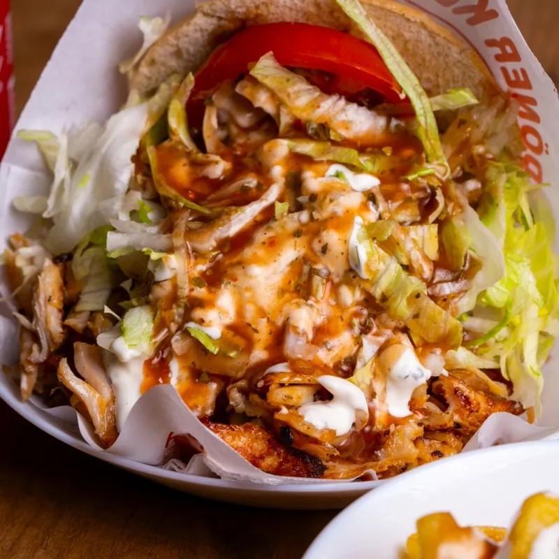
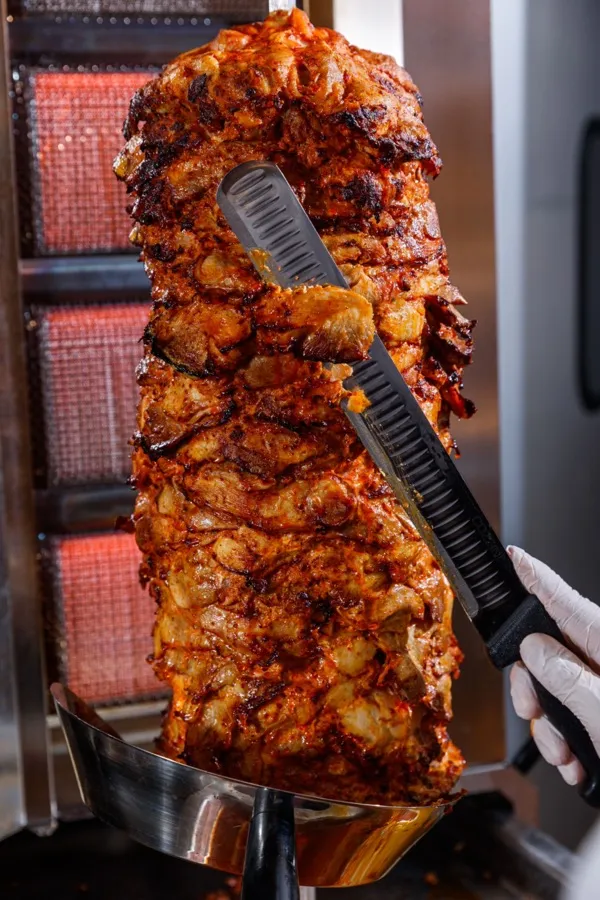
€ 8,00Broodje döner
€ 5,50Dürüm falafel
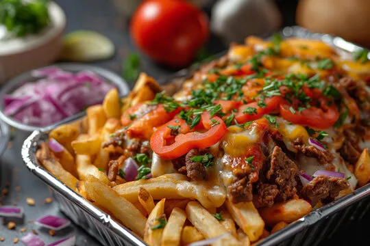
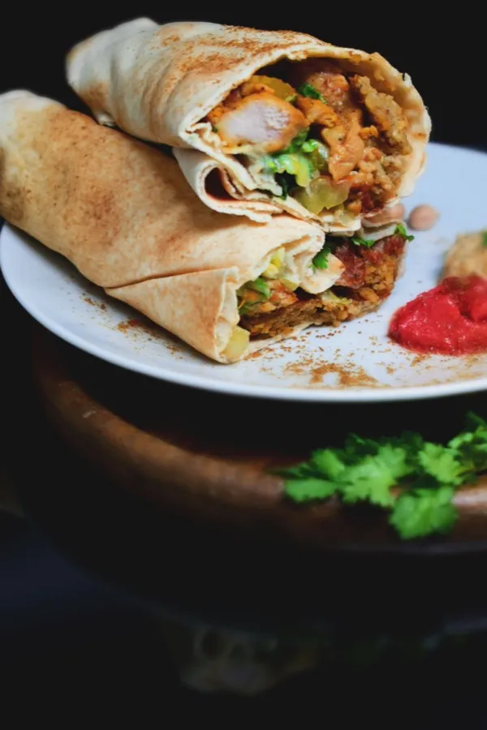
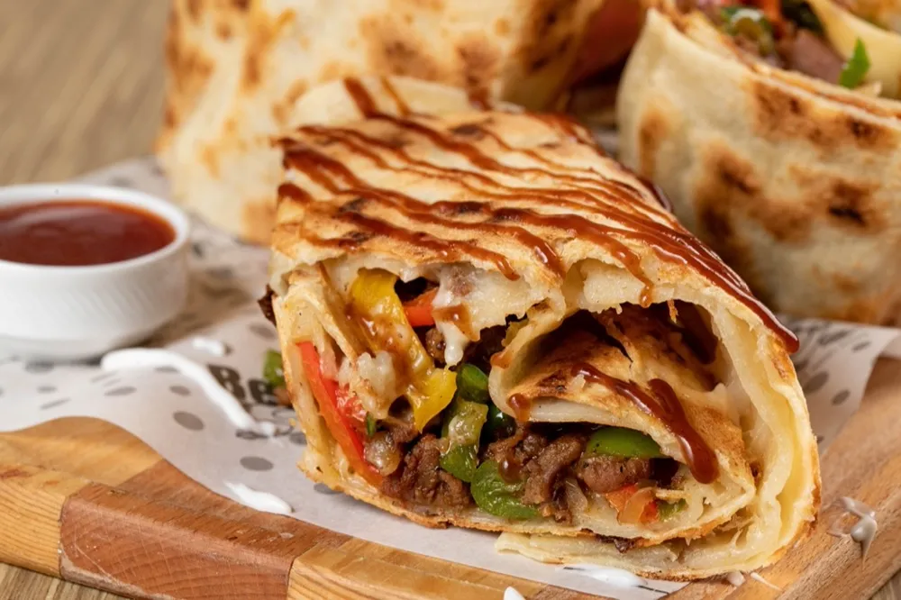
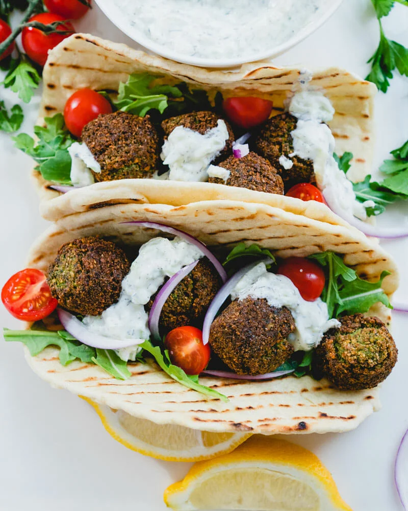
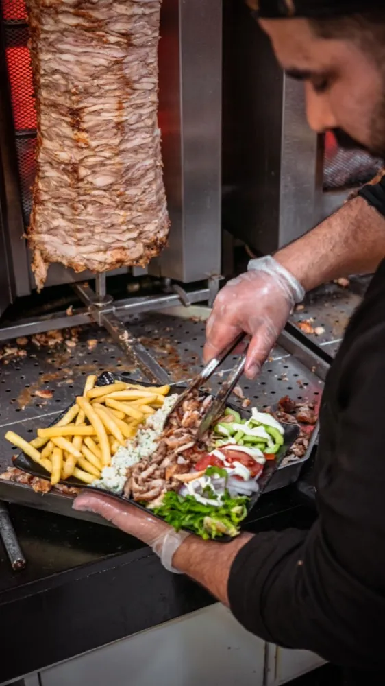
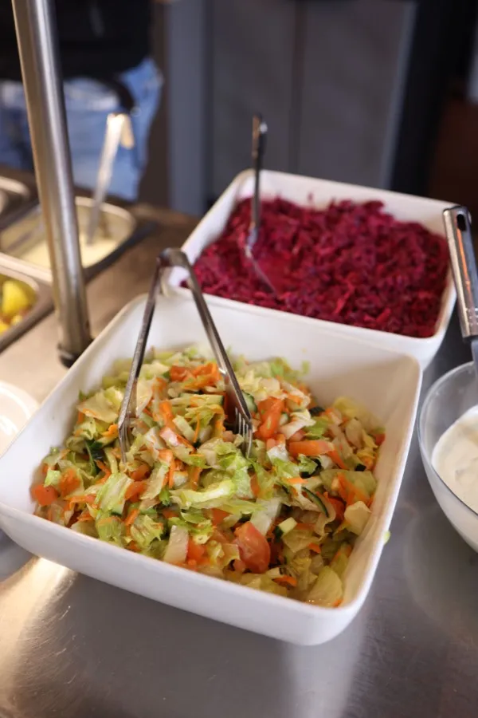
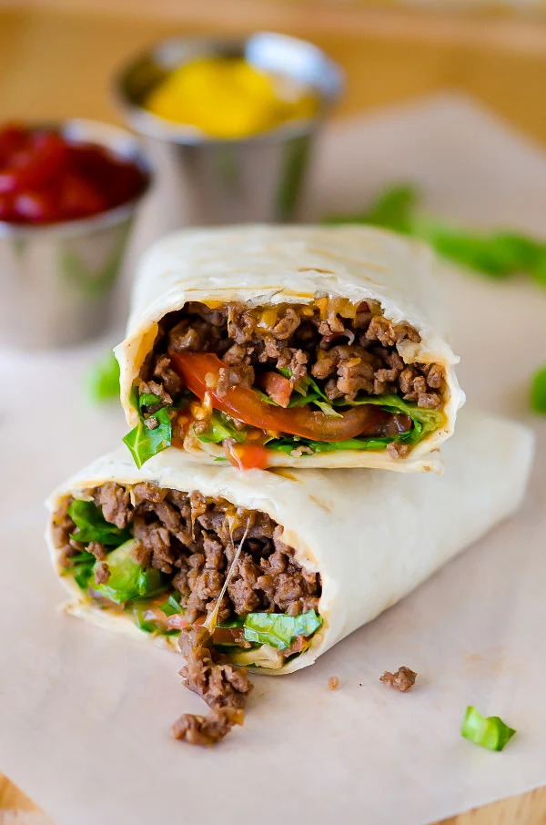
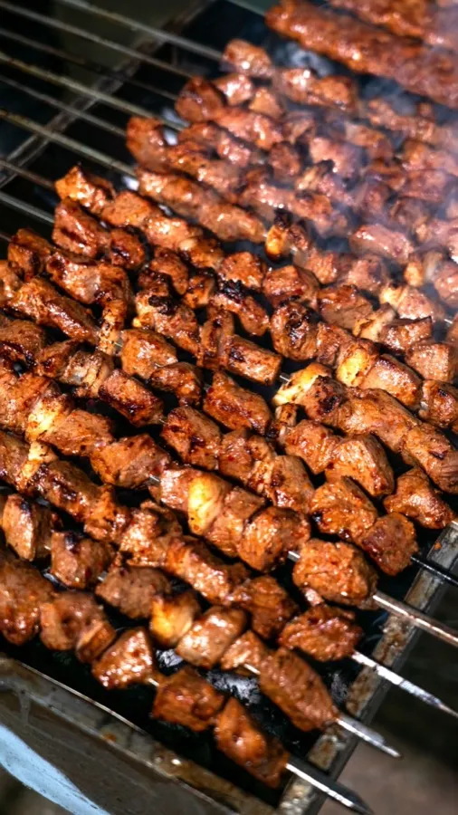
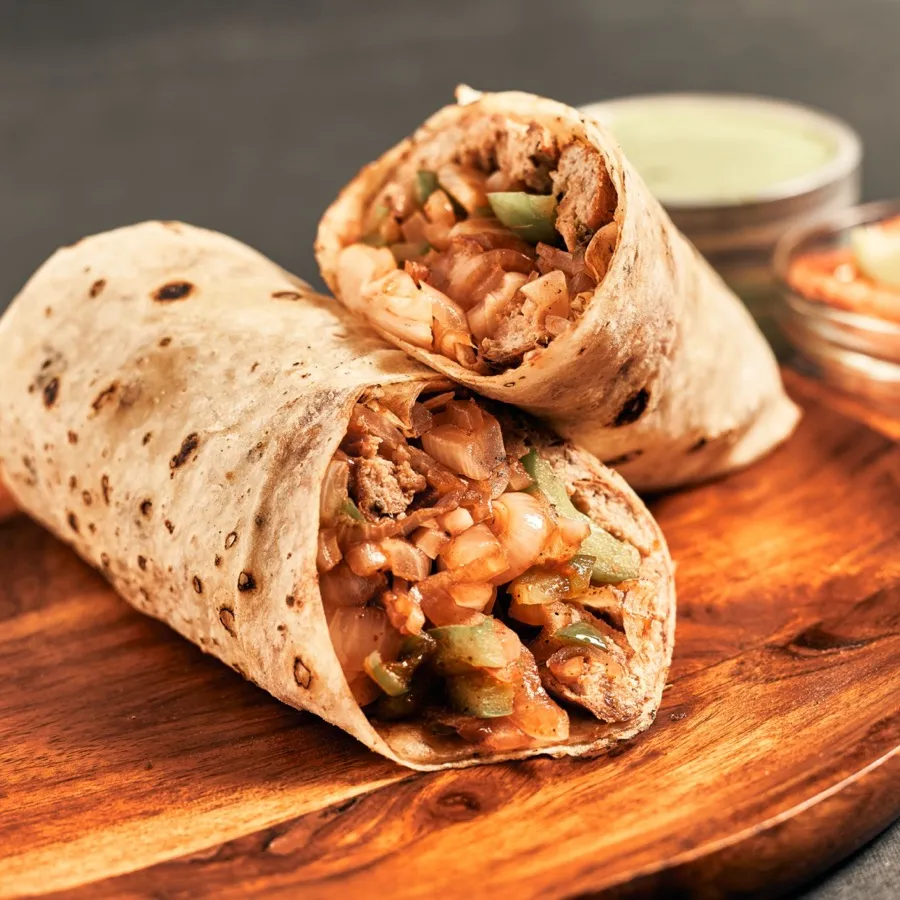
Waarom Gulli
Prijs en portie
Een quesadilla kaas voor € 4,00, een dürüm falafel voor € 5,50, en alles ruim belegd met vlees, salade en twee sauzen.
"Waar vind je nog een goed gevulde kebab voor een paar euro?"
Halal en vers
Alles op de kaart is halal, tot de snacks aan toe. Het vlees komt vers van het draaiende spit, niet uit de warmhoudbak.
"De döner was vers en lekker; ik kom hier zeker weer."
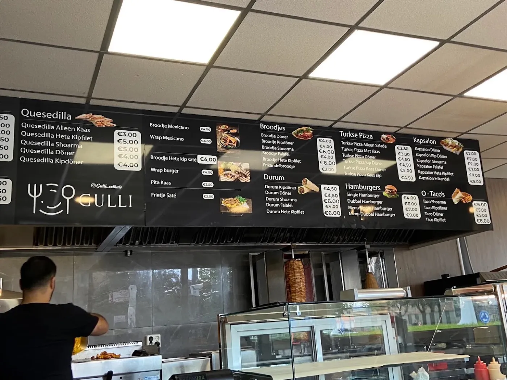
Service
Allergie of voedselgevoeligheid? We zoeken het voor je uit en laten desnoods de etiketten zien.
"Het personeel zocht alles op en liet zelfs de etiketten zien."
De kaart
Döner, kipdöner, shoarma, kipfilet of falafel: bijna alles kan in elke vorm, altijd met verse salade en twee sauzen naar keuze.
Het paradepaardje
v.a. € 87 varianten
Een van de beste kapsalons die ik ooit heb gegeten. Goede prijzen, lekker eten en absoluut een aanrader.
Friet, vlees vers van het spit, gesmolten kaas, frisse salade en twee sauzen naar keuze. In de Google-reviews is de kapsalon met afstand het vaakst genoemde gerecht.
Reviews
4,5 uit 160 Google-reviews.
Ik heb verschillende voedselgevoeligheden en had veel vragen over de ingrediënten. Het personeel zocht alles voor mij op en liet zelfs de etiketten zien. We hebben allebei heerlijk gegeten en ik waardeerde de service enorm.
Misschien wel mijn favoriete restaurant in Nederland. Waar vind je nog een goed gevulde kebab en een Mexicaanse wrap voor een paar euro? Heerlijk, betaalbaar en absoluut een aanrader.
Mijn favoriete eethoek van Den Bosch. Betaalbaar, heerlijk, vriendelijk en snel. Vooral de falafel dürüm is een echte aanrader.
Topdöner, aardige gasten, goede prijs en een behoorlijk uitgebreid menu. Een fijne zaak als je voor een goede prijs lekker en gevarieerd wilt eten.
Aardige gasten en een beetje een vakantiegevoel, omdat het geen oer-Hollandse frituur is. Heerlijk gegeten en zeker niet duur.
Altijd lekker eten. Een van de weinige plekken waar je nog fatsoenlijk kunt eten zonder dat alles van het vet afdruipt.
Superlekker eten en altijd vriendelijke service. Zelfs bij een hele grote bestelling kwam alles in één keer warm aan en werd er goed meegedacht.
Zo werkt het
Drie stappen en je eten staat klaar. Liever aan de balie? Bestellen in de zaak kan altijd.
Stel je bestelling samen van de volledige kaart, met je eigen sauzen erbij.
Vlees van het spit, salade vers gesneden en jouw twee sauzen eroverheen.
Op het tijdstip dat jij kiest. Betalen doe je bij ontvangst, met pin of contant.
Loop binnen aan de Christiaan Huygensweg 137 en bestel gewoon aan de balie.
Ma t/m za open van 11.00 tot 19.30 uur, zondag gesloten